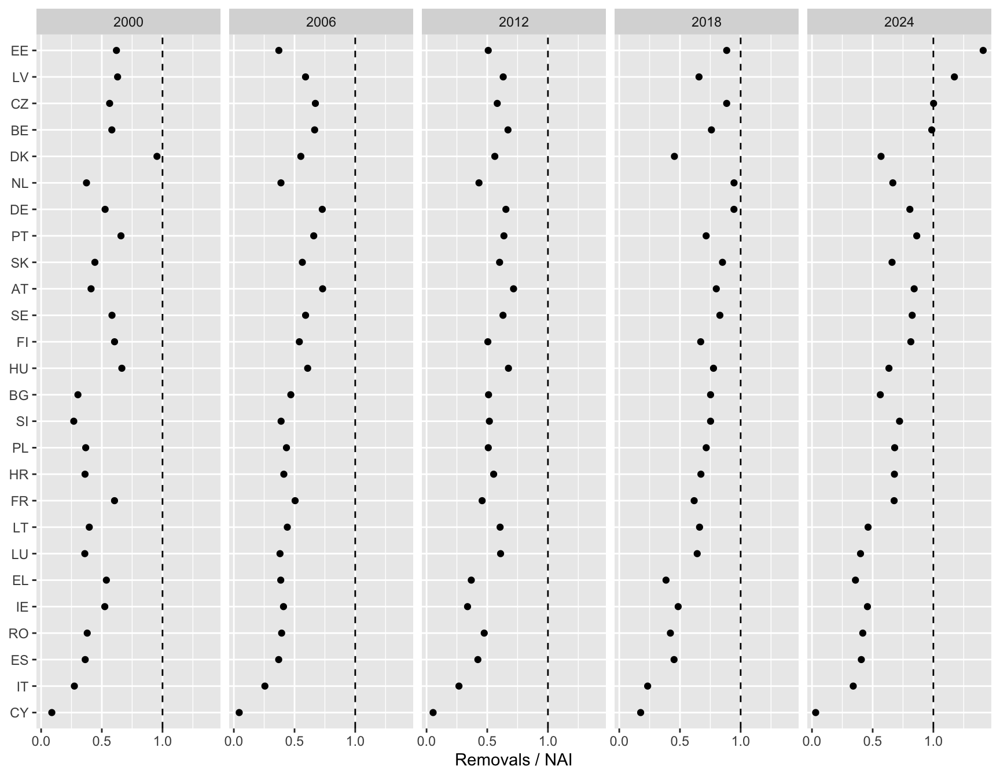
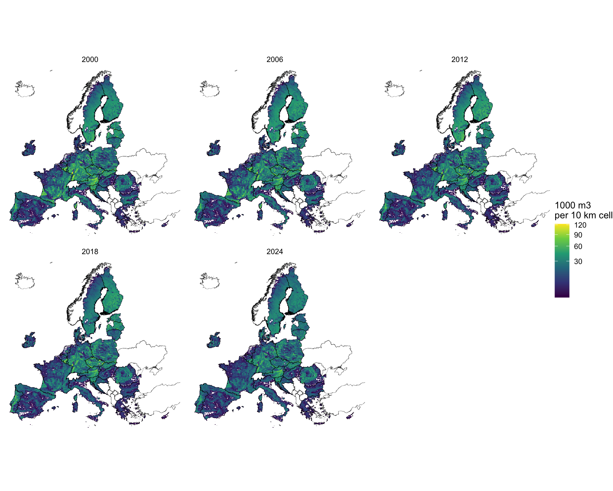
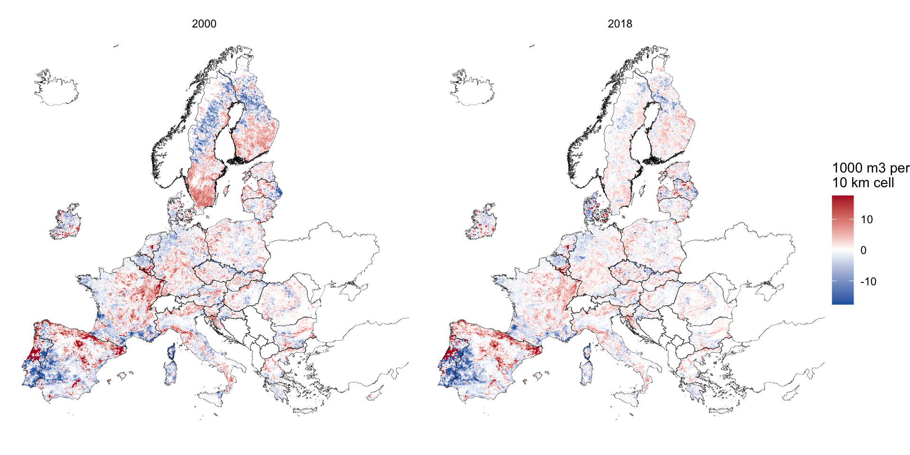
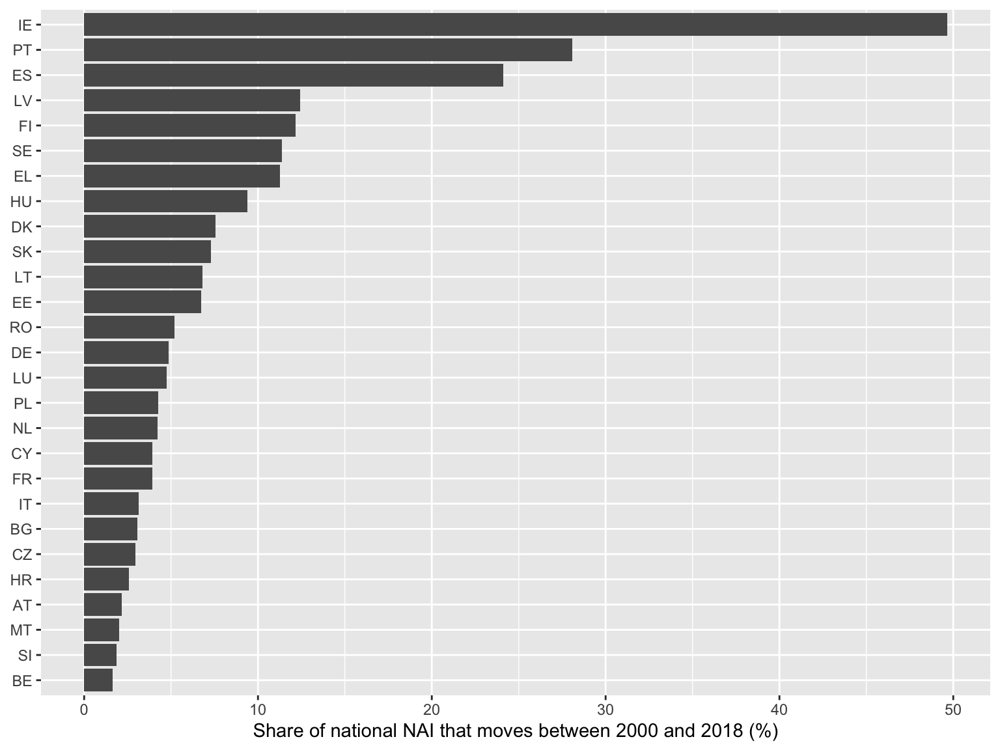

library(dplyr)
library(tidyr)
library(ggplot2)
library(sf)
library(terra)
library(flextable)
source("scripts/helpers_wood.R", encoding = "UTF-8")
source("scripts/helpers_results.R", encoding = "UTF-8")Wood Provision Ecosystem Service
Spatially explicit net annual increment and overuse check: annotated R processing routine
Introduction
This page documents the R routine that updates the wood provision ecosystem service for the European Union and makes it spatially explicit. Wood provision is the ecosystem contribution to the growth of trees, and it is measured here with the net annual increment (NAI) of the forest available for wood supply (FAWS), in thousand cubic metres over bark (Eurostat, 2026a; La Notte et al., 2021). Each step is written so that users can read it, rerun it from the repository alone and reuse the parts that generalise.
The routine has five components, in this order:
- the statistical component, which builds a complete country-by-year NAI series from Eurostat
for_vol_efa(Eurostat, 2026b) for 2000 to 2024, and reports the years 2000, 2006, 2012, 2018 and 2024; - the overuse check, which compares removals with NAI and flags country-years in which removals exceed NAI;
- the spatial component, which spreads each national NAI over the map of forest available for wood supply in 2020 (European Commission, Joint Research Centre, 2026), so that the pixels of a country add up to its national value;
- an optional refinement, which repeats the spatial step with Corine Land Cover forest of each epoch and compares it with the baseline, with outputs kept apart;
- the exports, which write the tables and maps to
data/outputs/for download.
Key terms
The terms below are used throughout the page.
| Term | Meaning in this document |
|---|---|
| Ecosystem service | A contribution of ecosystems to human activity. Here it is the growth of trees that can be harvested as timber. |
| Net annual increment (NAI) | The average annual volume growth of living trees, minus the volume of trees that die naturally. It is the quantity of new wood the forest adds in a year, and it is the accounting measure of the service. |
| Over bark | Volumes include the bark of the tree, as in the Eurostat questionnaire. |
| Thousand m3 | The unit of the volumes (1,000 cubic metres), as reported by Eurostat. |
| Forest available for wood supply (FAWS) | Forest where no environmental, social or economic restriction significantly limits wood supply. Protected areas, steep slopes or remote forests are typical restrictions. |
| Forest not available for wood supply (FNAWS) | Forest with such restrictions. |
| Removals | The volume of wood actually taken out of the forest in a year, which is close to the volume harvested. |
| Overuse | Removals greater than NAI. Harvesting more than the forest grows depletes the stock of timber, so the service is not sustained. |
| Spatial disaggregation | Splitting a national statistic over a map, using a proxy that says where the quantity is likely to occur. |
| NUTS | The European classification of territorial units. NUTS 0 is the country level. |
Eurostat reports NAI and removals by country, not by place. The routine therefore works in two stages. It first completes the national series, which is a statistical problem, and it then places the national values on a map, which is a spatial problem.
NoteWhere the data come from
The Eurostat tables are downloaded with the eurostat package, which reads the same data as the Eurostat website. The download script (scripts/03_download_eurostat.R) keeps only the volumes in thousand cubic metres, for the years 2000 to 2024.
NoteTwo reports are consulted for the method
INCA Part III (La Notte et al., 2021) defines the service and the NAI proxy, and INCA Part II (Vallecillo et al., 2019) (chapter 4) describes how national flows are spatialised. The Eurostat ecosystem accounts handbook (KS-01-26-019-EN-N) (Eurostat, 2026a) complements them. Its wood chapter treats FAWS as a cultivated context measured by net increment and forest not available for wood supply (FNAWS) as an uncultivated context measured by removals. None of the references gives a formula for timber overuse, so the check below defines overuse as removals greater than NAI.
NotePaths are relative to the project root
_quarto.yml sets execute-dir: project, so every path below resolves from the repository root regardless of where the .qmd file sits. There is no need for here::here() or setwd().
Preliminaries
Packages and helper functions
The helper functions live in scripts/helpers_wood.R. They keep this page short by hiding the loops and joins that are not part of the argument.
Parameters
The reporting years are 2000, 2006, 2012, 2018 and 2024. The series is built for every year from 2000 so that the gap-filling rules can look at neighbouring years.
years_all <- 2000:2024
years_report <- c(2000, 2006, 2012, 2018, 2024)
# Inputs (committed to the repository)
eurostat_file <- "data/inputs/eurostat/for_vol_efa_thsm3.rds"
countries_file <- "data/inputs/gis/NUTS_RG_01M_2024_3035_LEVL0.gpkg"
faws_share_file <- "data/inputs/faws/FAWS_2020_EU27_1km.tif"
faws_area_file <- "data/inputs/faws/faws_area_by_country.rds"
nuts_weights_file <- "data/inputs/faws/faws_weight_by_nuts.rds"
# Outputs
results_dir <- "data/outputs/results"
gis_dir <- "data/outputs/gis"
dir.create(results_dir, showWarnings = FALSE, recursive = TRUE)
dir.create(gis_dir, showWarnings = FALSE, recursive = TRUE)Preparing the inputs
Three inputs are too heavy or too raw to live in the repository as downloaded. Each one is reduced by a short script in scripts/, which is run once and whose compact product is committed. The scripts read from refs/, which is not versioned, so anyone who wants to repeat the reduction needs to place the original files there.
| Script | Source | Product in data/inputs/ |
|---|---|---|
01_prepare_nuts.R |
Eurostat GISCO NUTS 2024, 1:1 million, shipped with the INCA plugin (Eurostat GISCO, 2024) | gis/NUTS_RG_01M_2024_3035_LEVL0.gpkg, country polygons in EPSG:3035 |
02_prepare_faws.R |
FAWS 2020 map, 100 m, EU27 (European Commission, Joint Research Centre, 2026) | faws/FAWS_2020_EU27_1km.tif (share of each 1 km cell that is FAWS), faws/FNAWS_2020_EU27_1km.tif and faws/faws_area_by_country.rds (exact hectares by country at 100 m) |
03_download_eurostat.R |
Eurostat for_vol_efa, thousand m3, NAI and removals (Eurostat, 2026b) |
eurostat/for_vol_efa_thsm3.rds and .csv |
The FAWS map has two values, 1 and 2. The coding (1 for FAWS, 2 for forest not available) is inferred from the pixel counts and the accompanying report (Avitabile et al., 2023), since the files do not state it. The 100 m map weighs 157 MB, and the 1 km shares weigh about 15 MB in total.
source("scripts/01_prepare_nuts.R", encoding = "UTF-8")
source("scripts/02_prepare_faws.R", encoding = "UTF-8")
source("scripts/03_download_eurostat.R", encoding = "UTF-8")
source("scripts/06_prepare_nuts_weights.R", encoding = "UTF-8")
NoteMap boundaries
Country maps use the NUTS boundaries of Eurostat GISCO. © EuroGeographics for the administrative boundaries.
Statistical component
Loading Eurostat data
The data come from the European Forest Accounts questionnaire, which member states answer every year. They are partial in practice, because many countries cannot split NAI between available and unavailable forest, especially in the early years. The extract has one row per country, year, flow (NAI or RMOV) and forest class. FAWS is forest available for wood supply, FNAWS forest not available, and FOR total forest. Only the 27 member states are kept, and the EU aggregate published by Eurostat is held aside to check the totals later.
for_vol_efa <- readRDS(eurostat_file)
countries <- st_read(countries_file, quiet = TRUE)
eu27 <- countries$geo[countries$eu27]
eu_aggregate <- for_vol_efa |>
filter(geo == "EU27_2020")
for_vol_efa <- for_vol_efa |>
filter(geo %in% eu27)A small function picks one series of the extract. It keeps the later steps to a single line.
pick_series <- function(flow_name, class_name) {
for_vol_efa |>
filter(flow == flow_name, forest_class == class_name)
}How much was reported
The table counts the member states that reported each series in the five reporting years. NAI of FAWS is reported by very few countries before 2018, whereas NAI of total forest and removals cover nearly all of them. This is the reason for the gap-filling rule in the next section.
for_vol_efa |>
filter(
year %in% years_report,
forest_class %in% c("FAWS", "FOR")
) |>
count(flow, forest_class, year) |>
pivot_wider(names_from = year, values_from = n, values_fill = 0) |>
rename(Flow = flow, `Forest class` = forest_class) |>
show_table(digits = 0)Flow | Forest class | 2006 | 2012 | 2018 | 2024 | 2000 |
|---|---|---|---|---|---|---|
NAI | FAWS | 2 | 6 | 14 | 2 | 0 |
NAI | FOR | 26 | 26 | 26 | 2 | 26 |
RMOV | FAWS | 26 | 26 | 26 | 2 | 26 |
RMOV | FOR | 26 | 26 | 26 | 2 | 26 |
Gap filling NAI of FAWS
The INCA plugin fills the NAI of FAWS in the order below, and the routine does the same so that results are comparable with the plugin. The helper fill_series() applies the rules and labels each value with its origin.
- Use the NAI of FAWS where the country reported it (
reported). - Otherwise use the NAI of total forest (
fallback). Total forest includes the forest that is not available, so this is an upper bound for the flow of FAWS, but it is the closest reported figure. - Remaining gaps take the mean of the nearest earlier and later value of the same country (
interpolated). Forest growth changes slowly, so a value between two reported years is a reasonable estimate. Gaps at the start or end of a series repeat the nearest value (carried), which assumes no change beyond the data.
nai_filled <- fill_series(
primary = pick_series("NAI", "FAWS"),
fallback = pick_series("NAI", "FOR"),
geos = eu27,
years = years_all
)The table shows how many of the 27 values of each reporting year come from each rule. The 2024 row is dominated by carried values, because Eurostat holds 2024 for very few countries.
nai_filled |>
filter(year %in% years_report) |>
count(year, source) |>
pivot_wider(names_from = source, values_from = n, values_fill = 0) |>
rename(Year = year) |>
show_table(digits = 0)Year | fallback | carried | reported |
|---|---|---|---|
2000 | 26 | 1 | 0 |
2006 | 24 | 1 | 2 |
2012 | 20 | 1 | 6 |
2018 | 12 | 1 | 14 |
2024 | 0 | 25 | 2 |
Check against the Eurostat aggregate
The sum of the 27 country values is compared with the EU27 aggregate that Eurostat publishes for the same indicator. The aggregate for FAWS is Eurostat’s own estimate and differs from the sum of the reported country values, so some differences are expected. The table is a plausibility check, and values are in million cubic metres.
eu_check <- nai_filled |>
group_by(year) |>
summarise(`Sum of countries` = sum(value, na.rm = TRUE) / 1000) |>
left_join(
eu_aggregate |>
filter(flow == "NAI", forest_class %in% c("FAWS", "FOR")) |>
mutate(
series = paste("Eurostat EU27", forest_class),
million_m3 = thousand_m3 / 1000
) |>
select(year, series, million_m3) |>
pivot_wider(names_from = series, values_from = million_m3),
by = "year"
) |>
filter(year %in% years_report) |>
rename(Year = year)
show_table(eu_check, digits = 0)Year | Sum of countries | Eurostat EU27 FAWS | Eurostat EU27 FOR |
|---|---|---|---|
2000 | 912 | 891 | 912 |
2006 | 900 | 838 | 900 |
2012 | 855 | 814 | 871 |
2018 | 805 | 784 | 849 |
2024 | 736 |
A sensitivity check on the total forest fallback
NAI of total forest includes the forest not available for wood supply, so using it in place of the NAI of FAWS probably overstates the flow in the countries that need the fallback. The FAWS map gives the share of forest that is available in 2020 for every country. As a sensitivity check, the fallback values are multiplied by that share. The adjusted series is not used in the main results, and it is exported in the summary workbook for comparison.
faws_area <- readRDS(faws_area_file) |>
mutate(faws_share = faws_ha / (faws_ha + fnaws_ha))
nai_adjusted <- nai_filled |>
left_join(faws_area |> select(geo, faws_share), by = "geo") |>
mutate(
value_adjusted = if_else(source == "fallback", value * faws_share, value)
)
nai_adjusted |>
filter(year %in% years_report) |>
group_by(year) |>
summarise(
`INCA rule` = sum(value) / 1000,
`Fallback scaled by FAWS share` = sum(value_adjusted) / 1000
) |>
mutate(`Difference (%)` = 100 * (`Fallback scaled by FAWS share` / `INCA rule` - 1)) |>
rename(Year = year) |>
show_table(digits = 1)Year | INCA rule | Fallback scaled by FAWS share | Difference (%) |
|---|---|---|---|
2000 | 912.3 | 819.4 | -10.2 |
2006 | 899.5 | 811.4 | -9.8 |
2012 | 855.0 | 776.3 | -9.2 |
2018 | 805.1 | 754.1 | -6.3 |
2024 | 735.7 | 735.7 | 0.0 |
Overuse check
NAI is the wood that the forest grows in a year, and removals are the wood taken out. When removals stay above NAI the standing stock shrinks, which means that the service is being used faster than it renews. Overuse is reported when removals exceed NAI. Removals are used and not fellings, because fellings are not part of for_vol_efa. The routine takes the removals from forest available for wood supply (RMOV of FAWS), with the same fallback and gap-filling rules as NAI, so both sides of the comparison cover the same forest.
The comparison is made year by year. A single year above 1 can be a temporary peak, for example after a storm, and a sustained ratio above 1 is the stronger signal. The ratio of removals to NAI is kept in the table, in addition to the flag, for that reason.
removals_filled <- fill_series(
primary = pick_series("RMOV", "FAWS"),
fallback = pick_series("RMOV", "FOR"),
geos = eu27,
years = years_all
)
overuse <- check_overuse(nai_filled, removals_filled)The next table lists the country-years with overuse among the reporting years. When the NAI or the removals of a country-year were carried forward or taken from the fallback, the flag deserves a second look, and the source columns show it.
overuse |>
filter(year %in% years_report, overuse) |>
transmute(
Year = year,
Country = geo,
`NAI (1000 m3)` = nai,
`Removals (1000 m3)` = removals,
`Removals / NAI` = removals_to_nai,
`NAI source` = as.character(nai_source),
`Removals source` = as.character(removals_source)
) |>
arrange(Year, desc(`Removals / NAI`)) |>
show_table(digits = 2)Year | Country | NAI (1000 m3) | Removals (1000 m3) | Removals / NAI | NAI source | Removals source |
|---|---|---|---|---|---|---|
2024 | EE | 8,200.00 | 11,564.00 | 1.41 | carried | carried |
2024 | LV | 16,126.60 | 18,920.00 | 1.17 | carried | carried |
2024 | CZ | 20,458.35 | 20,495.73 | 1.00 | carried | carried |
The chart shows the ratio of removals to NAI for the countries in the reporting years. Values to the right of the dashed line are overuse. Malta has only zero values in the extract, so its ratio is undefined and it is left out of the chart.
overuse |>
filter(year %in% years_report, is.finite(removals_to_nai)) |>
mutate(geo = reorder(geo, removals_to_nai, FUN = max)) |>
ggplot(aes(x = removals_to_nai, y = geo)) +
geom_vline(xintercept = 1, linetype = "dashed") +
geom_point() +
facet_wrap(~year, nrow = 1) +
labs(x = "Removals / NAI", y = NULL)
Spatial component
The spatial key
Chapter 4 of INCA Part II spreads national flows with a productivity proxy over the forest classes of Corine Land Cover, and it explains that a map of forest available for wood supply did not exist at the time (Vallecillo et al., 2019). That map now exists (European Commission, Joint Research Centre, 2026). The routine uses it as the spatial key: inside each country, the national NAI is spread in proportion to the share of every 1 km cell that is available for wood supply. Cells without FAWS get no flow, and the cells of a country add up to its national value.
The FAWS map describes a single year (2020), so the same spatial key is used for every reporting year. Changes between years come only from the national statistics.
Three choices in this step deserve a short explanation. First, the maps use the projection EPSG:3035 (ETRS89 Lambert azimuthal equal-area), in which every cell covers the same area on the ground, so a share of a cell and a count of cells translate directly into areas. Second, the FAWS map is built at 100 m, and the routine summarises it to 1 km cells holding the share of the cell that is FAWS. This keeps the delivered files small enough for the repository, and the exact areas at 100 m are kept for each country as a reference. Third, the sum of each country is conserved, which means that mapping redistributes the national NAI and neither adds nor removes any.
faws_share <- rast(faws_share_file)
eu_countries <- vect(countries_file)
eu_countries <- eu_countries[eu_countries$eu27, ]Country grid and weights
Each 1 km cell is assigned to a country, and the weights of every country are added once. The sums are reused for every year.
country_ids <- make_country_ids(eu_countries, faws_share)
weight_sums <- country_weight_sums(faws_share, country_ids)The weights of the 1 km grid can be compared with the exact hectares computed from the 100 m map. The small shortfall comes from cells that fall outside the generalised country polygons, mostly on coasts.
weight_sums |>
left_join(faws_area, by = "geo") |>
summarise(
`FAWS in 1 km weights (Mha)` = sum(weight_sum) * 100 / 1e6,
`FAWS at 100 m (Mha)` = sum(faws_ha) / 1e6
) |>
show_table(digits = 2)FAWS in 1 km weights (Mha) | FAWS at 100 m (Mha) |
|---|---|
139.13 | 139.26 |
Spreading the national NAI
For each reporting year, the helper spread_totals() multiplies every cell by its country factor (national NAI divided by the weight total of the country). The result is in thousand cubic metres per 1 km cell, and each year is saved as a compressed GeoTIFF in data/outputs/gis/.
for (yr in years_report) {
flow_map <- spread_totals(
totals = filter(nai_filled, year == yr),
weight = faws_share,
country_ids = country_ids,
weight_sums = weight_sums
)
names(flow_map) <- paste0("nai_faws_", yr)
writeRaster(
flow_map,
file.path(gis_dir, sprintf("wood_nai_faws_1km_%s.tif", yr)),
overwrite = TRUE,
datatype = "FLT4S",
gdal = c("COMPRESS=DEFLATE", "PREDICTOR=3", "TILED=YES")
)
}Conservation check
The sum of each map must equal the sum of the national values of that year. The check reads the maps back from disk, so it also verifies the files that are delivered.
nai_maps <- rast(file.path(gis_dir, sprintf("wood_nai_faws_1km_%s.tif", years_report)))
national_totals <- nai_filled |>
filter(year %in% years_report) |>
group_by(year) |>
summarise(total = sum(value) / 1000) |>
pull(total)
tibble(
Year = years_report,
`Sum of maps (million m3)` = global(nai_maps, "sum", na.rm = TRUE)[[1]] / 1000,
`Sum of national values (million m3)` = national_totals
) |>
mutate(
`Difference (%)` = 100 * (`Sum of maps (million m3)` / `Sum of national values (million m3)` - 1)
) |>
show_table(digits = 2)Year | Sum of maps (million m3) | Sum of national values (million m3) | Difference (%) |
|---|---|---|---|
2,000.00 | 912.29 | 912.29 | 0.00 |
2,006.00 | 899.54 | 899.54 | -0.00 |
2,012.00 | 854.97 | 854.97 | 0.00 |
2,018.00 | 805.08 | 805.08 | 0.00 |
2,024.00 | 735.73 | 735.73 | 0.00 |
A second check confirms that no country is left without a map although it has a national value. A country with a national NAI and no FAWS cells would lose its flow, and the table would list it.
nai_filled |>
filter(year == max(years_report)) |>
left_join(weight_sums, by = "geo") |>
filter(is.na(weight_sum) | weight_sum <= 0) |>
select(Country = geo, `NAI (1000 m3)` = value) |>
show_table(digits = 0)Country | NAI (1000 m3) |
|---|
Maps
The maps are shown at 10 km (sum of the 100 cells of 1 km) so that they draw quickly. The delivered files keep the 1 km resolution.
map_data <- aggregate(nai_maps, fact = 10, fun = "sum", na.rm = TRUE) |>
as.data.frame(xy = TRUE) |>
pivot_longer(starts_with("nai_faws_"), names_to = "year", values_to = "nai") |>
mutate(year = sub("nai_faws_", "", year)) |>
filter(nai > 0)
ggplot(map_data) +
geom_tile(aes(x = x, y = y, fill = nai)) +
geom_sf(data = countries, fill = NA, linewidth = 0.1) +
scale_fill_viridis_c(transform = "sqrt", name = "1000 m3\nper 10 km cell") +
facet_wrap(~year, ncol = 3) +
coord_sf(xlim = c(2.6e6, 6.6e6), ylim = c(1.4e6, 5.4e6), datum = NA) +
theme_void() +
labs(x = NULL, y = NULL)
Refinement: Corine Land Cover forest by year
ImportantOptional refinement with its own outputs
Everything above is the baseline and is not changed by this section. The refinement writes to the subfolders data/outputs/gis/corine_refinement/ and data/outputs/results/corine_refinement/, and every file name starts with corine_refinement_, so it cannot be mistaken for the baseline.
Why and how
Corine Land Cover is a European land cover map made by photo-interpreting satellite images, with 44 classes and a minimum mapped unit of 25 ha. It is produced for 1990, 2000, 2006, 2012 and 2018. The classes of forest are broad-leaved, coniferous and mixed forest.
The baseline uses the 2020 FAWS pattern for every year. Corine Land Cover (CLC) maps forest for 2000, 2006, 2012 and 2018 (European Environment Agency, 2020), so combining the two lets the spatial key change with forest extent. The refined key of a year is the 100 m overlap of FAWS and CLC forest (broad-leaved, coniferous and mixed forest, CLC 311, 312 and 313) of that epoch, summed to 1 km shares. The national NAI is spread over it in the same way as in the baseline, so the sum of each country is conserved. CLC 2018 is the latest epoch and is also used for 2024.
The CLC rasters are 3 GB each as downloaded. The script scripts/05_prepare_clc.R reduces them to four 1 km files of about 9 MB in data/inputs/corine/. The version used is V2020_20u1 (the Copernicus Land Monitoring Service release that revised all epochs consistently).
source("scripts/05_prepare_clc.R", encoding = "UTF-8")Weights by epoch
clc_epochs <- c("2000", "2006", "2012", "2018")
# CLC epoch used for each reporting year
clc_for_year <- c(`2000` = "2000", `2006` = "2006", `2012` = "2012", `2018` = "2018", `2024` = "2018")
refine_gis_dir <- file.path(gis_dir, "corine_refinement")
refine_results_dir <- file.path(results_dir, "corine_refinement")
dir.create(refine_gis_dir, showWarnings = FALSE, recursive = TRUE)
dir.create(refine_results_dir, showWarnings = FALSE, recursive = TRUE)
clc_weights <- lapply(clc_epochs, \(e) rast(sprintf("data/inputs/corine/FAWS_x_CLC%s_1km.tif", e)))
names(clc_weights) <- clc_epochs
clc_weight_sums <- lapply(clc_weights, country_weight_sums, country_ids = country_ids)The table gives the area where FAWS and CLC forest coincide, as a share of the FAWS area. CLC forest and FAWS come from different sources and mapping units (CLC has a minimum mapping unit of 25 ha), so the overlap is partial, and it differs by country.
overlap <- bind_rows(clc_weight_sums, .id = "epoch") |>
left_join(weight_sums |> rename(faws = weight_sum), by = "geo") |>
mutate(
overlap_ha = weight_sum * 100,
faws_ha_1km = faws * 100,
overlap_share = overlap_ha / faws_ha_1km
)
overlap |>
summarise(
`FAWS (Mha)` = sum(faws_ha_1km) / 1e6,
`FAWS and CLC forest (Mha)` = sum(overlap_ha) / 1e6,
`Overlap (% of FAWS)` = 100 * sum(overlap_ha) / sum(faws_ha_1km),
.by = epoch
) |>
rename(`CLC epoch` = epoch) |>
show_table(digits = 1)CLC epoch | FAWS (Mha) | FAWS and CLC forest (Mha) | Overlap (% of FAWS) |
|---|---|---|---|
2000 | 139.1 | 101.6 | 73.0 |
2006 | 139.1 | 103.7 | 74.5 |
2012 | 139.1 | 107.7 | 77.4 |
2018 | 139.1 | 108.8 | 78.2 |
No country loses all of its weights, so every national value can be placed. The countries with the lowest overlap in 2018 are listed below, since their refined maps depend most on CLC.
overlap |>
filter(epoch == "2018") |>
arrange(overlap_share) |>
slice_head(n = 6) |>
transmute(Country = geo, `Overlap (% of FAWS)` = 100 * overlap_share) |>
show_table(digits = 0)Country | Overlap (% of FAWS) |
|---|---|
MT | 23 |
PT | 34 |
IE | 53 |
ES | 54 |
DK | 55 |
EL | 57 |
Spreading the national NAI
for (yr in years_report) {
epoch <- clc_for_year[[as.character(yr)]]
refined_map <- spread_totals(
totals = filter(nai_filled, year == yr),
weight = clc_weights[[epoch]],
country_ids = country_ids,
weight_sums = clc_weight_sums[[epoch]]
)
names(refined_map) <- paste0("nai_clc_", yr)
writeRaster(
refined_map,
file.path(refine_gis_dir, sprintf("corine_refinement_wood_nai_faws_1km_%s.tif", yr)),
overwrite = TRUE,
datatype = "FLT4S",
gdal = c("COMPRESS=DEFLATE", "PREDICTOR=3", "TILED=YES")
)
}The conservation check reads the files back, as in the baseline.
refined_maps <- rast(
file.path(refine_gis_dir, sprintf("corine_refinement_wood_nai_faws_1km_%s.tif", years_report))
)
tibble(
Year = years_report,
`CLC epoch` = unname(clc_for_year[as.character(years_report)]),
`Sum of maps (million m3)` = global(refined_maps, "sum", na.rm = TRUE)[[1]] / 1000,
`Sum of national values (million m3)` = national_totals
) |>
mutate(
`Difference (%)` = 100 * (`Sum of maps (million m3)` / `Sum of national values (million m3)` - 1)
) |>
show_table(digits = 2)Year | CLC epoch | Sum of maps (million m3) | Sum of national values (million m3) | Difference (%) |
|---|---|---|---|---|
2,000.00 | 2000 | 912.29 | 912.29 | -0.00 |
2,006.00 | 2006 | 899.54 | 899.54 | -0.00 |
2,012.00 | 2012 | 854.97 | 854.97 | -0.00 |
2,018.00 | 2018 | 805.08 | 805.08 | 0.00 |
2,024.00 | 2018 | 735.73 | 735.73 | 0.00 |
Comparison with the baseline
Both sets of maps hold the same national totals, so differences are only in where the flow falls inside each country. For each year, the table reports the share of the total NAI that sits in a different place at 10 km resolution, and the correlation between the two maps at that resolution.
base_10km <- aggregate(nai_maps, fact = 10, fun = "sum", na.rm = TRUE)
refined_10km <- aggregate(refined_maps, fact = 10, fun = "sum", na.rm = TRUE)
comparison <- tibble(
Year = years_report,
`NAI moved (% of total)` = sapply(seq_along(years_report), \(i) {
100 * 0.5 * global(abs(refined_10km[[i]] - base_10km[[i]]), "sum", na.rm = TRUE)[[1]] /
global(base_10km[[i]], "sum", na.rm = TRUE)[[1]]
}),
`Correlation of cells` = sapply(seq_along(years_report), \(i) {
cor(values(base_10km[[i]]), values(refined_10km[[i]]), use = "complete.obs")
})
)
show_table(comparison, digits = 2)Year | NAI moved (% of total) | Correlation of cells |
|---|---|---|
2,000.00 | 7.94 | 0.96 |
2,006.00 | 7.70 | 0.96 |
2,012.00 | 6.48 | 0.97 |
2,018.00 | 6.54 | 0.96 |
2,024.00 | 6.42 | 0.97 |
The maps show the difference (refined minus baseline) for the first and last CLC epochs. Red cells receive more flow with the refinement and blue cells receive less.
diff_data <- (refined_10km[[c(1, 4)]] - base_10km[[c(1, 4)]]) |>
setNames(c("2000", "2018")) |>
as.data.frame(xy = TRUE) |>
pivot_longer(c(`2000`, `2018`), names_to = "year", values_to = "difference") |>
filter(abs(difference) > 0)
diff_limit <- as.numeric(quantile(abs(diff_data$difference), 0.99))
ggplot(diff_data) +
geom_tile(aes(x = x, y = y, fill = pmax(pmin(difference, diff_limit), -diff_limit))) +
geom_sf(data = countries, fill = NA, linewidth = 0.1) +
scale_fill_gradient2(
low = "#2166ac", mid = "white", high = "#b2182b",
name = "1000 m3 per\n10 km cell"
) +
facet_wrap(~year, ncol = 2) +
coord_sf(xlim = c(2.6e6, 6.6e6), ylim = c(1.4e6, 5.4e6), datum = NA) +
theme_void() +
labs(x = NULL, y = NULL)
The next chart shows what only the refinement can show, which is the change of the spatial pattern between the 2000 and 2018 epochs. For each country, it gives the share of the national NAI that would sit in a different cell if the 2018 pattern replaced the 2000 pattern. The baseline would show zero for every country.
pattern_change <- country_ids$ids |>
mutate(
# Share of the national NAI per 1 km cell, in 2000 and 2018 epochs
gain = sapply(id, \(i) {
mask <- country_ids$raster == i
a <- clc_weights[["2000"]] * mask
b <- clc_weights[["2018"]] * mask
sa <- global(a, "sum", na.rm = TRUE)[[1]]
sb <- global(b, "sum", na.rm = TRUE)[[1]]
if (sa <= 0 || sb <= 0) return(NA_real_)
100 * 0.5 * global(abs(a / sa - b / sb), "sum", na.rm = TRUE)[[1]]
})
)
pattern_change |>
filter(!is.na(gain)) |>
mutate(geo = reorder(geo, gain)) |>
ggplot(aes(x = gain, y = geo)) +
geom_col() +
labs(x = "Share of national NAI that moves between 2000 and 2018 (%)", y = NULL)
The largest shifts are in Ireland, Portugal and Spain. Part of what looks like change in forest may come from differences in how national teams classified land in each CLC epoch, and from fires and plantation cycles, so the pattern change should be read with caution and not as a measure of forest gain or loss.
The refined maps are more detailed in time and use a second dataset, but they are not obviously more accurate. CLC and FAWS were mapped independently, and CLC classes forest at a coarser minimum unit than the 100 m FAWS map. The baseline remains the main result, and the refinement is an alternative for users who need the change of forest extent over time.
export_table(
overlap |>
transmute(epoch, geo, faws_ha_1km, overlap_ha, overlap_share),
"corine_refinement_faws_clc_overlap_by_country",
dir = refine_results_dir
)
export_table(
comparison |> rename_with(\(x) gsub("[^A-Za-z0-9]+", "_", x)),
"corine_refinement_comparison_with_baseline",
dir = refine_results_dir
)Exports
The tables are saved as .rds, .csv and .xlsx through export_table(), and a workbook with the reporting-year tables is saved for users. A GeoPackage of the countries carries the reporting-year values for use in GIS.
nai_export <- nai_filled |>
rename(nai_faws_1000m3 = value, nai_source = source)
export_table(nai_export, "wood_nai_faws_country_year")
export_table(
overuse |> mutate(across(c(nai_source, removals_source), as.character)),
"wood_overuse_country_year"
)summary_sheets <- list(
nai_report_years = nai_export |>
filter(year %in% years_report) |>
select(geo, year, nai_faws_1000m3) |>
pivot_wider(names_from = year, values_from = nai_faws_1000m3),
overuse_report_years = overuse |>
filter(year %in% years_report) |>
mutate(across(c(nai_source, removals_source), as.character)),
sensitivity_fallback_scaled = nai_adjusted |>
filter(year %in% years_report) |>
transmute(
geo, year,
inca_rule = value,
scaled_by_faws_share = value_adjusted,
source = as.character(source)
),
faws_area_by_country = faws_area
)
writexl::write_xlsx(summary_sheets, file.path(results_dir, "wood_provision_summary.xlsx"))The results workbook has the tables of the actual flow and of the overuse for NUTS0, NUTS2 and NUTS3. Regions share the national value in proportion to their FAWS weight, so they add up to the country. The sheets in monetary terms are added by the monetary valuation document.
write_results_workbook(
overuse, readRDS(nuts_weights_file), years_report, base_year = 2010,
path = file.path(results_dir, "wood_provision_results.xlsx")
)country_values <- overuse |>
filter(year %in% years_report) |>
select(geo, year, nai, removals, overuse) |>
pivot_wider(
names_from = year,
values_from = c(nai, removals, overuse),
names_glue = "{.value}_{year}"
)
countries |>
filter(eu27) |>
left_join(country_values, by = "geo") |>
st_write(
file.path(gis_dir, "wood_provision_countries.gpkg"),
layer = "countries",
delete_dsn = TRUE,
quiet = TRUE
)Downloads
_quarto.yml lists data/outputs/ under project.resources, so these files are copied into the published site. The links below are relative to this page.
tables_dl <- tibble(
File = c(
"wood_nai_faws_country_year.xlsx",
"wood_nai_faws_country_year.rds",
"wood_overuse_country_year.xlsx",
"wood_overuse_country_year.rds",
"wood_provision_summary.xlsx",
"wood_provision_results.xlsx"
),
Folder = "results",
Description = c(
"National NAI of FAWS by year, 2000 to 2024, with the origin of every value",
"The same panel as an R object",
"NAI, removals, balance, ratio and overuse flag by country and year",
"The same panel as an R object",
"Reporting-year tables and the fallback sensitivity check, one sheet each",
"Results tables for NUTS0, NUTS2 and NUTS3 in physical terms, with the monetary sheets added by the monetary valuation document"
)
)
maps_dl <- tibble(
File = c(
sprintf("wood_nai_faws_1km_%s.tif", years_report),
"wood_provision_countries.gpkg"
),
Folder = "gis",
Description = c(
sprintf("NAI of FAWS in %s, thousand m3 per 1 km cell, EPSG:3035", years_report),
"EU27 country polygons with NAI, removals and overuse flag for the reporting years"
)
)
refinement_dl <- tibble(
File = c(
"corine_refinement_faws_clc_overlap_by_country.xlsx",
"corine_refinement_comparison_with_baseline.xlsx",
sprintf("corine_refinement_wood_nai_faws_1km_%s.tif", years_report)
),
Folder = c(rep("results/corine_refinement", 2), rep("gis/corine_refinement", length(years_report))),
Description = c(
"Refinement: area where FAWS and CLC forest coincide, by country and CLC epoch",
"Refinement: how far the refined maps differ from the baseline maps, by year",
sprintf("Refinement: NAI of FAWS in %s spread over FAWS and CLC forest, thousand m3 per 1 km cell", years_report)
)
)
downloads <- bind_rows(tables_dl, maps_dl, refinement_dl) |>
mutate(Path = file.path("../../../data/outputs", Folder, File))
flextable(downloads, col_keys = c("File", "Description")) |>
compose(
j = "File",
value = as_paragraph(hyperlink_text(x = File, url = Path))
) |>
fontsize(size = 9, part = "all") |>
autofit()File | Description |
|---|---|
National NAI of FAWS by year, 2000 to 2024, with the origin of every value | |
The same panel as an R object | |
NAI, removals, balance, ratio and overuse flag by country and year | |
The same panel as an R object | |
Reporting-year tables and the fallback sensitivity check, one sheet each | |
Results tables for NUTS0, NUTS2 and NUTS3 in physical terms, with the monetary sheets added by the monetary valuation document | |
NAI of FAWS in 2000, thousand m3 per 1 km cell, EPSG:3035 | |
NAI of FAWS in 2006, thousand m3 per 1 km cell, EPSG:3035 | |
NAI of FAWS in 2012, thousand m3 per 1 km cell, EPSG:3035 | |
NAI of FAWS in 2018, thousand m3 per 1 km cell, EPSG:3035 | |
NAI of FAWS in 2024, thousand m3 per 1 km cell, EPSG:3035 | |
EU27 country polygons with NAI, removals and overuse flag for the reporting years | |
Refinement: area where FAWS and CLC forest coincide, by country and CLC epoch | |
Refinement: how far the refined maps differ from the baseline maps, by year | |
Refinement: NAI of FAWS in 2000 spread over FAWS and CLC forest, thousand m3 per 1 km cell | |
Refinement: NAI of FAWS in 2006 spread over FAWS and CLC forest, thousand m3 per 1 km cell | |
Refinement: NAI of FAWS in 2012 spread over FAWS and CLC forest, thousand m3 per 1 km cell | |
Refinement: NAI of FAWS in 2018 spread over FAWS and CLC forest, thousand m3 per 1 km cell | |
Refinement: NAI of FAWS in 2024 spread over FAWS and CLC forest, thousand m3 per 1 km cell |
Limitations and proposals to refine the spatial key
- The FAWS map is a single year. Time variation in forest extent is not represented in the baseline, so the maps of 2000 and 2006 apply the 2020 pattern to older national values. The Corine refinement above adds that variation, with the limits discussed in its section.
- The FAWS map says where wood supply is possible and says nothing about growing conditions. Cells with the same FAWS share receive the same flow inside a country. INCA Part II used dry matter productivity for this purpose (Vallecillo et al., 2019).
- NAI of FAWS is reported by few countries before 2018. The fallback to total forest probably overstates the flow, as the sensitivity check shows. The INCA plugin replaces missing values with estimates from the JRC carbon budget model, which are not available in this repository.
- The 2024 values mostly repeat the latest available year, since Eurostat holds 2024 for very few countries. They should be refreshed when the dataset is updated.
- The FAWS and boundary layers are aggregated to 1 km, so cells on the coast and on borders are assigned to one country by their centre point.
Further candidate refinements include the biomass available for wood supply map as a weight and dry matter productivity as a within-FAWS weight. The monetary valuation that follows the physical accounts is in its own document.
References
Avitabile, V. et al. (2023). Biomass production, supply, uses and flows in the european union (No. EUR 31566 EN, JRC132358). Publications Office of the European Union. https://doi.org/10.2760/811744
European Commission, Joint Research Centre. (2026). Map of the forest available for wood supply (FAWS) of EU27 for 2020. https://doi.org/10.2905/JRC.SF31H30
European Environment Agency. (2020). Corine land cover (CLC), raster 100 m, version 2020_20u1, epochs 2000, 2006, 2012 and 2018. Copernicus Land Monitoring Service. https://doi.org/10.2909/960998c1-1870-4e82-8051-6485205ebbac
Eurostat. (2026a). Ecosystem accounts handbook, 2026 edition. Luxembourg: Publications Office of the European Union.
Eurostat. (2026b). Volume of timber over bark (EFA questionnaire) [for_vol_efa]. Eurostat database. https://doi.org/10.2908/FOR_VOL_EFA
Eurostat GISCO. (2024). Administrative units, statistical units: NUTS 2024, scale 1:1 million. Retrieved from https://ec.europa.eu/eurostat/web/gisco/geodata/statistical-units/territorial-units-statistics
La Notte, A., Vallecillo, S., Garcia-Bendito, E., Grammatikopoulou, I., Czúcz, B., Ferrini, S., … Maes, J. (2021). Ecosystem services accounting. Part III: Pilot accounts for habitat and species maintenance, on-site soil retention and water purification (No. EUR 30856 EN, JRC126566). Publications Office of the European Union.
Vallecillo, S., La Notte, A., Kakoulaki, G., Kamberaj, J., Robert, N., Dottori, F., … Maes, J. (2019). Ecosystem services accounting. Part II: Pilot accounts for crop and timber provision, global climate regulation and flood control (No. EUR 29731 EN, JRC116334). Publications Office of the European Union.